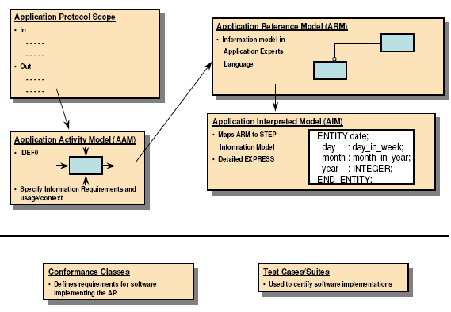
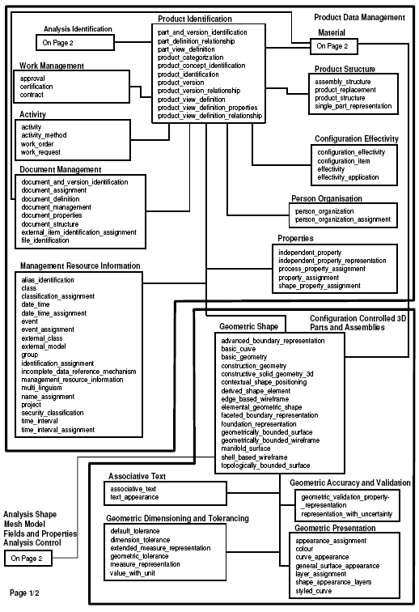

AP209 Modular Edition 2
Update for AIAA CGNS Team
1/5/2007
Keith Hunten, P.E.
Lockheed Martin Aeronautics Co.
Overview
- Overview of STEP Architecture
- AP209 E2 Modularization Approach and Progress
- High Level AP209 E2 Engineering Analysis Composition
- Applicable Recent Integrated Resource Developments
- Remaining Tasks
- Future Cooperations
Elements of the ISO 10303 STEP Standard

STEP Application Protocol (AP) Components

Applicable Recent Engineering Analysis Integrated Resource Developments
- Parts 50 and 51 provide the mathematical basis for the definition
and representation of fields and expressions
- Including external binary format representation
- Parts 52 and 53 provide the remaining basis for structured and
unstructured meshes
- Part 110 adds further detail for Fluid Dynamics
- Part 107 provides the linkage between existing Part 104-based
FEA and the above
|
| Part 50: |
| Mathematical constructs
|
|
| Part 51: |
| Mathematical description
|
|
| Part 52: |
| Mesh based topology
|
|
| Part 53: |
| Numerical analysis
|
|
| Part 104: |
| Finite element analysis
|
|
| Part 107: |
| FEA definition relationships
|
|
| Part 110: |
| Mesh based computational fluid dynamics
|
Modularization Approach and Progress
- Primary Objective
- Modify/include existing modules (203 E2, PDM)
- Create Materials, and Composites modules from AP209 E1
- Create FEA modules from AP209 E1
- Create Engineering Analysis Core Model (EACM) Fields modules
from newly developed STEP Integrated Resources
- Create Structured/Unstructured Grids and Analyses from STEP
integrated resources derived from the integration of the AIAA
CGNS standard and EACM
- Fluid Dynamics and Heat Transfer (ESA STEP/TAS - TBD) are
initial goals
- Create Implementation and AP modules (TBD)
- Progress
- Application Reference Models (ARMs) have been created,
compiled, and EXPRESS-G diagrams drawn for all but the
Implementation and AP modules
- Stretch Objective
- Create Nonlinear Analyses by enhancing IRs and Modules (TBD)
High Level AP209E2 Engineering Analysis Modular Composition

See backup charts for complete high-level planning model.
Remaining Tasks
- Complete the copying of ARM object and attribute definitions into
modular publishing format
- Copy in existing ARM-AIM mapping tables
- Create mapping tables for new CFD and mesh-based numerical analysis
modules
- Create final long form EXPRESS AIM (implementation form)
- Send out for ISO ballot
Potential Areas of Cooperation
- STEP has been creating an new Binary implementation form based upon
HDF-5
- David Price of EuroSTEP has been doing this under VIVACE
funding
- CGNS has as well
- Experience has taught us that in order to really get widespread
implementation a high-level API must be developed
- ISO STEP Engineering Analysis team would definitely like
to get a lessons learnt and advice from CGNS team on their
experiences with this
- Since the CGNS model was (fairly) faithfully used in the
integration with other STEP IRs we should be able to come very
close, if not exactly, to the existing CGNS API for the CFD
subset
Backup Slides
AP209 E2 High Level Planning Model
